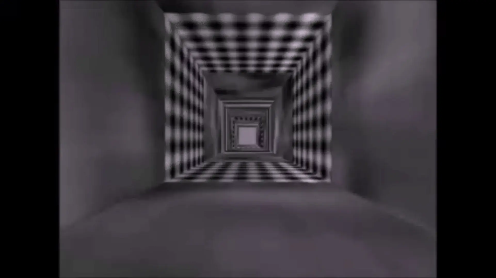
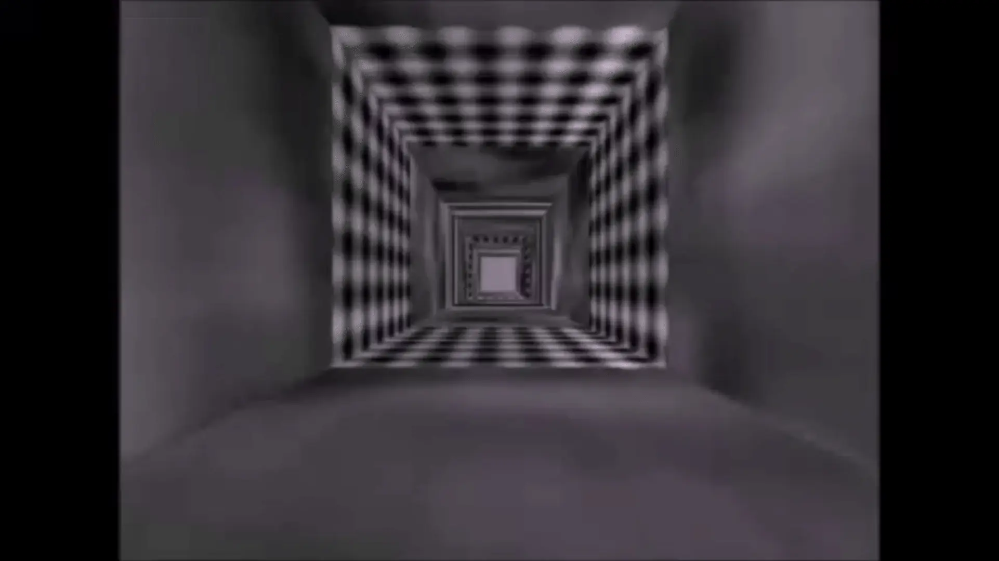

BonVision
An open-source software package to create and control visual environments.
BonVision is developed by the Saleem Lab & Solomon Lab at the UCL Institute of Behavioural Neuroscience in collaboration with NeuroGEARS.
BonVision’s key features include:
- Naturally closed-loop system based on reactive coding of the Bonsai framework
- Handles 2D and 3D stimuli with equal ease
- Visual environment generated independent of display configuration
- Graphical programming language of the Bonsai framework
- Can be used for Augmented Reality, Virtual Reality or 2D visual stimuli
- Does not require the observer to be in a fixed position
Video Walkthrough
More Bonvision videos on specific topics can be found on our youtube channel.
Publication / Citation
G Lopes, K Farrell, E A B Horrocks, C Lee, M M Morimoto, T Muzzu, A Papanilolaou, F R Rodrigues, T Wheatcroft, S Zucca, S G Solomon, A B Saleem, (2021) Creating and controlling visual environments using BonVision. eLife link